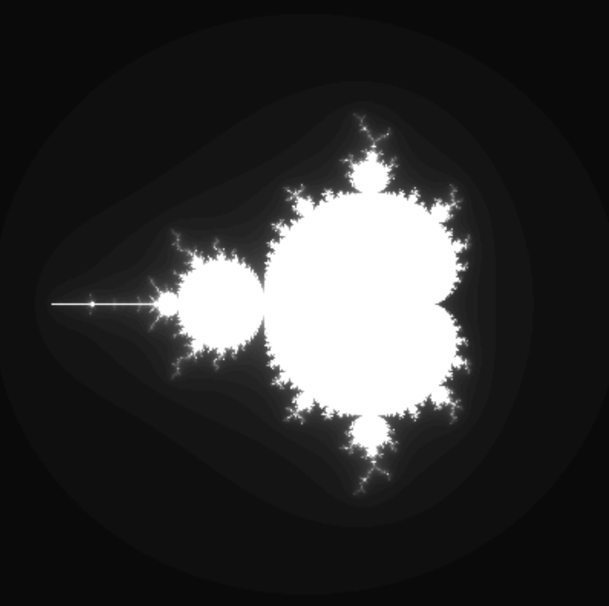
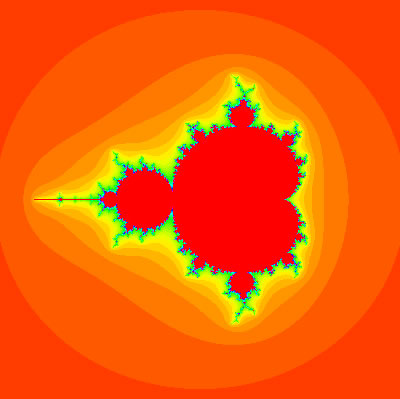
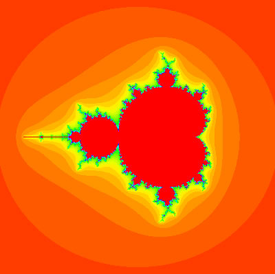

第2回： フラクタル
重要 課題はManabaを使って提出してもらいます
課題について
提出期限
- 演習1 2025年04月24日（木）17:00
- そのほか 2025年05月05日（月） 15:15
課題
必修課題は全部で4つ（演習1から演習4）
ボーナス課題は1つ（演習5）
- 演習1: フラクタルを考慮した画像の撮影の実践 (3点) 2025年04月24日（木）17:00まで**
- 演習2: コッホ曲線の作成と描画時間の計測（3点）2025年05月05日（月） 15:15まで
- 演習3: マンデルブロ集合の描画（3点）2025年05月05日（月） 15:15まで
- 演習4:（ボーナス）中点変位法の実装（3点）2025年05月05日（月） 15:15まで
授業の資料
演習1 [3点] フラクタルを考慮した画像の撮影の実践
自分の好きな対象（人物、静物、植物、なんでもOK）について:
- 黄金比を考慮しないで撮影した画像
- 黄金比を考慮して撮影した画像
- 2.について、具体的に工夫したところをテキストで説明
をppt1枚にまとめて提出せよ。サンプルはこちら (PDF)
1.Processingでフラクタルを感じる
この授業では Processing というプログラミング言語を使って学習を進めます。Processingは、JAVAをベースにしたデザイナーやアーティスト向けの手軽な開発環境であり、MITメディアラボでプログラミング教育用に作られたDesign By Numbers にその起源があります。Design By Numbers は表現力が限られており、より高度な表現を可能にするために登場したのが、Processing です。 理系の学生さんならば、Processingに登場するコマンド群になじみがあり、すぐに使いこなすことができるようになると思います。
準備
Processing はこちらからダウンロードすることができます。
このProcessing の圧縮ファイルを、解凍するだけで、すぐに使えるはずです。
＊注: Processing のバージョンは、「4.3」以上を使ってください。サンプルプログラムの動作テストは Processing 4.3で行われています。
とにかくやってみよう！ (Do it anyway!)
以上、Processingの取扱いには慣れてきたでしょうか？
Processingの各種コマンド等に関する参考ページが以下にありますので、そちらを参考にするとよいでしょう。
リファレンス(Reference)
2. [演習2]コッホ曲線を描いてみよう (drawing the Koch curve)
授業でも登場したコッホ曲線を描いてみましょう。実は、コッホ曲線を描画するプログラムは、Processingのサンプルプログラムとして提供されており、以下のプログラムは、それを拝借したものです。
演習2 [3点] コッホ曲線の描画
- 上記のプログラムを参考にして、自分のパソコンの壁紙サイズのコッホ曲線を描くように改良してください。また描画の色なども変更して、カラフルなものにしてみてください。
- 1)で作成した画像を、自分のパソコンの壁紙に設定し、そのスクリーンショットしたものを提出してください。つまり提出するものは、スクリーンショット1枚です。
3. [演習3] マンデルブロ集合の描画
マンデルブロ集合を描画してみよう
フラクタル図形の中でも、マンデルブロによって作り出されたマンデルブロ集合は非常に有名です。この集合は、非常に簡単な数式で記述されているにもかかわらず、生成される図形は、まるで宇宙のような豊かな構造を持っています。まずは、以下のパワーポイントで、マンデルブロ集合についてよく理解した後、プログラムを咀嚼してみてください。わからない場合は、友達同士で相談しながら理解を深めてください。
さて、上の資料を読んで、理解できましたか？十分理解できていなくても、以下のプログラムを動かせば理解できるようになるかもしれません。まずはプログラムを動かしてみましょう。またプログラム中に、どのように動いているのかのコメントを書いておきましたので、そちらをよく読めば、きっと理解できると思います。がんばってください。

マンデルブロ集合描画プログラムその2
マンデルブロ集合描画プログラムその3
実行結果
 

演習3[3点] マンデルブロ集合は、色々な部分（特に縁の部分）を拡大してみると、全く別の様相を観測することができる。自分なりに、マンデルブロ集合を探検してみよう。
たとえば、パラメータを
a = -0.745427、b = 0.113009、w = 0.00001
に設定し、描画部分を少し修正した以下のプログラムを描画するとどうなるだろうか？
（以下のプログラムでは、上記のパラメータに設定しております。）
実行結果の画像を、Word等に貼り付けて提出せよ。
上記のパラメータの組み合わせ以外にも、色々と調整することで不思議な構造が見えてくる。
自分なりに最低3種類のパラメータの組み合わせを発見し、レポートに結果の画像を貼り付けて提出せよ。
（※もし、興味深いパラメータの組み合わせを見つけることができない場合、このページの一番下にあるパラメータ調整プログラムを使ってみるとよいでしょう。）
ボーナス課題
演習4（ボーナス課題） [3点] 中点変位法の実装
中点変位法による2次元の山並みを描画するプログラムを実装する前に、ちょっと準備をしてもらいます。
「controlP5」というライブラリをProcessingのライブラリにインストールしてください。
バージョンは、2.2.6をインストールしてください。
インストール手順
- Processingの「スケッチ」メニューを開き、「ライブラリをインポート」を選び、「Manage Libraries」を選択。
- ControlP5を検索して選択し、Installを押す。
ControlP5は、GUIのライブラリで、今後、皆さんのコンテンツを格好良くするツールとして非常に役に立つと思いますので、ぜひ一度、参考ページを読みながら勉強してみてください。
以下に中点変位法のサンプルプログラムを準備したので、まずはこれを実行してみてください。
このプログラムは、データ構造が少し複雑になっているので、どのように機能しているのかを理解するのは難しいかもしれません。
その場合は、まあ、こんなものだろうと納得して演習に進んでもらって結構です。
ここから演習課題
上記の中点変位法のプログラムにおいて、冒頭部の変数「MAX_DEPTH」等を変化させることで、反復回数やJITTERを変化させることができます。
反復回数の上限を変化させ、20回反復させた画像をキャプチャし、ワード等に貼り付けて提出しなさい。